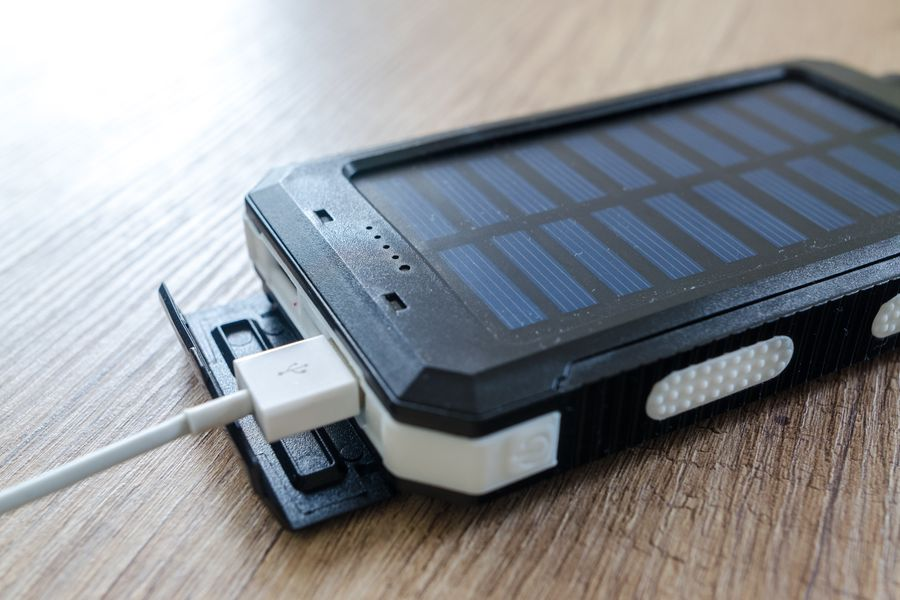
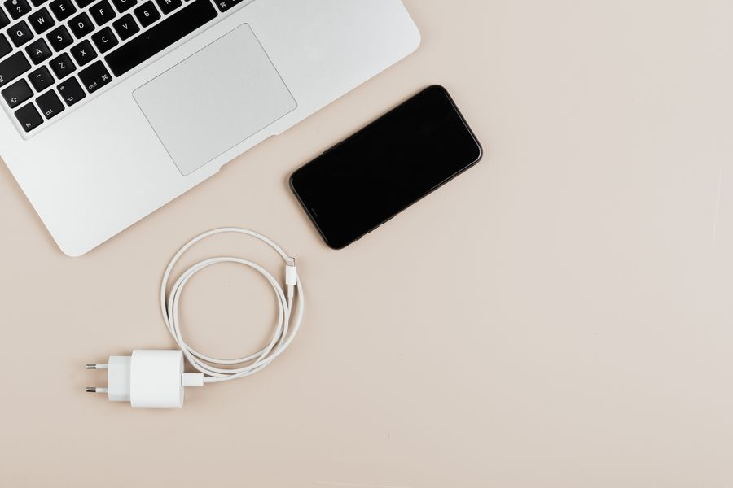
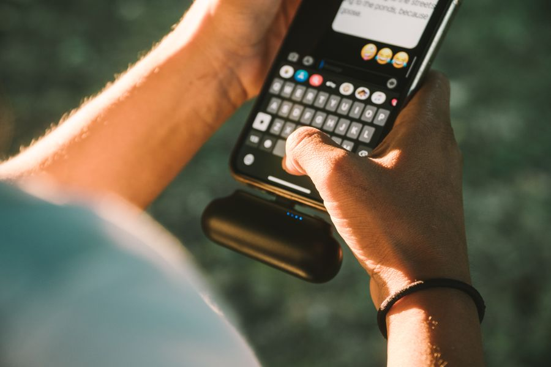
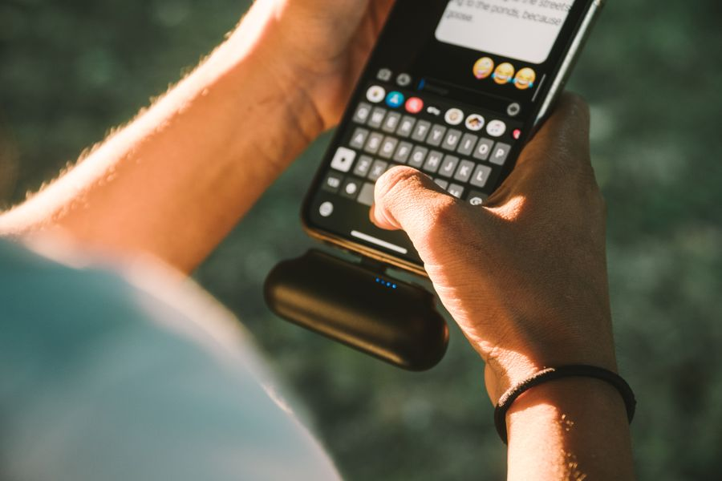

Los mejores en calidad-precio
El mejor 
Imagen orientativa La mejor, sin mirar el precio
Anker 737 Power Bank A favor Carga portátiles a gran velocidad Pantalla con datos reales Capacidad grande sin pasar del límite de avión Si viajas con portátil y quieres una sola batería para todo.
Ver precio actual en Amazon
¿Te lo estás pensando? Añádelo al carrito en Amazon y decídelo con calma: te avisan si baja de precio y lo tienes a mano cuando te decidas.
No ponemos precios porque cambian cada día. Lo ves actualizado al entrar.
Gama media 
Imagen orientativa Gama media · fin de semana
Anker PowerCore 20.000 mAh USB-C A favor Aguanta varios días o dos aparatos Carga rápida de verdad El techo cómodo si vuelas: por encima te acercas al límite de 100 Wh.
Ver precio actual en Amazon
¿Te lo estás pensando? Añádelo al carrito en Amazon y decídelo con calma: te avisan si baja de precio y lo tienes a mano cuando te decidas.
No ponemos precios porque cambian cada día. Lo ves actualizado al entrar.
Gama media 
Imagen orientativa Gama media · la de diario
Anker PowerCore 10.000 mAh A favor Carga y media larga de móvil Cabe en un bolsillo En contra Aprovecharás el 60-70% de lo anunciado: es física El tamaño que de verdad se acaba llevando encima.
Ver precio actual en Amazon
¿Te lo estás pensando? Añádelo al carrito en Amazon y decídelo con calma: te avisan si baja de precio y lo tienes a mano cuando te decidas.
No ponemos precios porque cambian cada día. Lo ves actualizado al entrar.
El mejor barato 
Imagen orientativa La mejor de las baratas
Xiaomi Power Bank 10.000 mAh A favor Marca fiable a precio de genérico Suficiente para el día a día En contra Menos vatios de salida que las de arriba Cuando quieres una batería que no te dé sustos sin gastarte mucho.
Ver precio actual en Amazon
¿Te lo estás pensando? Añádelo al carrito en Amazon y decídelo con calma: te avisan si baja de precio y lo tienes a mano cuando te decidas.
No ponemos precios porque cambian cada día. Lo ves actualizado al entrar.